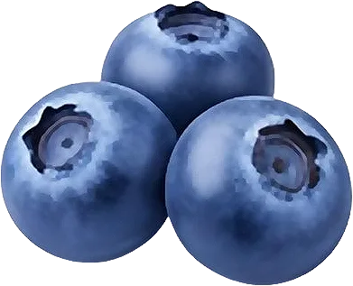

Myrtille

Petite baie des sous-bois et des montagnes, riche en pigments antioxydants.
- Saison : juillet, août, septembre
- Pleine saison : août
- Famille botanique : Éricacées
Histoire
La myrtille sauvage pousse dans les sous-bois et les landes de montagne d’Europe, où elle est cueillie depuis la préhistoire. La myrtille cultivée, plus grosse, descend d’une espèce américaine sélectionnée aux États-Unis au début du XXᵉ siècle.
Origine et régions de production
La myrtille française est cueillie en montagne ou cultivée en plaine :
- Vosges
- Massif central
- Alpes
- Nouvelle-Aquitaine (cultivée)
Bienfaits
La myrtille concentre beaucoup de bienfaits dans un petit fruit :
- Anthocyanes : Ces pigments bleus antioxydants sont très concentrés dans la myrtille sauvage.
- Fibres : Elles participent au transit.
- Vitamine K : Présente en bonne quantité.
- Peu calorique : Environ 57 kcal/100 g.
Variétés
- Myrtille sauvage : Petite, chair violette, cueillie en montagne.
- Myrtille cultivée : Plus grosse, chair claire et douce.
- Bluecrop : La variété cultivée la plus répandue.
- Duke : Précoce, grosses baies fermes.
Conserver sans gaspiller
- Conservation : Au frigo, sans les laver : 1 semaine.
- Congélation : Telles quelles, à plat : jusqu’à 12 mois. Elles s’utilisent sans décongeler.
- Rien ne se jette : Les myrtilles écrasées font une confiture ou un coulis. Parfaites dans les muffins même un peu molles.